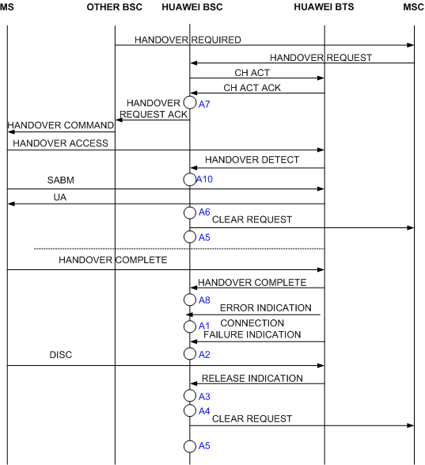

Measurement Counter
CM365:CELL_SIG_CALL_DROPS_FORCE_HO
Description
After the MS seizes a channel, the BSC initiates forced handover in the cases of channel preemption, channel failure, channel blocking. If the MS fails to handover, the BSC releases the call.
This measurement provides the number of call releases by the BSC on the signaling channel due to forced handover failure.
Unit
Integer number or integer.
Measurement Point
When an SDCCH or a TCH is seized to carry signaling during a call, this counter is measured in the following situations:
- The timer expires before the outgoing BSC handover command is received, or the CLEAR REQUEST message is received from the MSC before the timer expires, and the handover cause is OM intervention, MSC triggering, or preemption.
- A call drop occurs during the emergency handover due to PDCH assignment, or ‏the handover due to TRX mutual aid, preemption, or blocking of cells, TRXs, and channels.
This counter is calculated at A6, as shown in Figure 1, Figure 2, Figure 3, Figure 4, and Figure 5.

A1: Call Drops Due to ERR IND Received in Stable State, Call Drops Due to the ERR IND Received on the TRX in the Underlaid Subcell in Stable State, Call Drops Due to the ERR IND Received on the TRX in the Overlaid Subcell in Stable State |
A2: Call Drops Due to the CONN FAIL IND Received in Stable State, Call Drops Due to the CONN FAIL IND Received on the TRX in the Underlaid Subcell in Stable State, Call Drops Due to the CONN FAIL IND Received on the TRX in the Overlaid Subcell in Stable State |
A3: Call Drops Due to REL IND Received in Stable State, Call Drops Due to the REL IND Received on the TRX in the Underlaid Subcell in Stable State, Call Drops Due to the REL IND Received on the TRX in the Overlaid Subcell in Stable State |
A4: Call Drops Due to No MRs from MS for a Long Time, Call Drops Due to No MR from the MS on the TRX in the Underlaid Subcell, Call Drops Due to No MR from the MS on the TRX in the Overlaid Subcell, Call Drops due to Abis Terrestrial Link Failure, Call Drops Due to Abis Terrestrial Link Failure on the TRX in the Underlaid Subcell, Call Drops Due to Abis Terrestrial Link Failure on the TRX in the Overlaid Subcell, Call Drops Due to Equipment Failure, Call Drops Due to TRX Failure in the Underlaid Subcell, Call Drops Due to TRX Failure in the Overlaid Subcell, Call Drops due to Resource Check, Call Drops Due to Resource Check on the TRX in the Underlaid Subcell, Call Drops Due to Resource Check on the TRX in the Overlaid Subcell |
A5: Clear Requests Sent on the A Interface |
A6: Call Drops Due to Forced Handover, Call Drops Due to Forced Handover on the TRX in the Underlaid Subcell, Call Drops Due to Forced Handover on the TRX in the Overlaid Subcell |
A10: Successful SDCCH Seizures (Call Type) |

A1: Call Drops Due to ERR IND Received in Stable State, Call Drops Due to the ERR IND Received on the TRX in the Underlaid Subcell in Stable State, Call Drops Due to the ERR IND Received on the TRX in the Overlaid Subcell in Stable State |
A2: Call Drops Due to the CONN FAIL IND Received in Stable State, Call Drops Due to the CONN FAIL IND Received on the TRX in the Underlaid Subcell in Stable State, Call Drops Due to the CONN FAIL IND Received on the TRX in the Overlaid Subcell in Stable State |
A3: Call Drops Due to REL IND Received in Stable State, Call Drops Due to the REL IND Received on the TRX in the Underlaid Subcell in Stable State, Call Drops Due to the REL IND Received on the TRX in the Overlaid Subcell in Stable State |
A4: Call Drops Due to No MRs from MS for a Long Time, Call Drops Due to No MR from the MS on the TRX in the Underlaid Subcell, Call Drops Due to No MR from the MS on the TRX in the Overlaid Subcell, Call Drops due to Abis Terrestrial Link Failure, Call Drops Due to Abis Terrestrial Link Failure on the TRX in the Underlaid Subcell, Call Drops Due to Abis Terrestrial Link Failure on the TRX in the Overlaid Subcell, Call Drops Due to Abis Link Failures in Stable Loopback State, Call Drops Due to Equipment Failure, Call Drops Due to TRX Failure in the Underlaid Subcell, Call Drops Due to TRX Failure in the Overlaid Subcell, Call Drops Due to Resource Check, Call Drops Due to Resource Check on the TRX in the Underlaid Subcell, Call Drops Due to Resource Check on the TRX in the Overlaid Subcell, Call Drops Due to Handover Failure During the Loopback, Call Drops Due to Other Causes in Stable State |
A5: Clear Requests Sent on the A Interface, Call Drops after Answer, Call Drops After Answer on the TRX in the Underlaid Subcell, Call Drops After Answer on the TRX in the Overlaid Subcell |
A6: Call Drops Due to Forced Handover, Call Drops Due to Forced Handover on the TRX in the Underlaid Subcell, Call Drops Due to Forced Handover on the TRX in the Overlaid Subcell, Failed Internal Intra-Cell Handovers (Timer Expired) |
A7: Call Drops Due to Loopback Start Failure |
A8: Successful TCH Seizures on the TRX in the Underlaid Subcell, Successful TCH Seizures on the TRX in the Overlaid Subcell, Call Drops Due to Failures to Return to Normal Call from Loopback |
A9: Successful Connections |

A1: Call Drops Due to ERR IND Received in Stable State, Call Drops Due to the ERR IND Received on the TRX in the Underlaid Subcell in Stable State, Call Drops Due to the ERR IND Received on the TRX in the Overlaid Subcell in Stable State |
A2: Call Drops Due to the CONN FAIL IND Received in Stable State, Call Drops Due to the CONN FAIL IND Received on the TRX in the Underlaid Subcell in Stable State, Call Drops Due to the CONN FAIL IND Received on the TRX in the Overlaid Subcell in Stable State |
A3: Call Drops Due to REL IND Received in Stable State, Call Drops Due to the REL IND Received on the TRX in the Underlaid Subcell in Stable State, Call Drops Due to the REL IND Received on the TRX in the Overlaid Subcell in Stable State |
A4: Call Drops Due to No MRs from MS for a Long Time, Call Drops Due to No MR from the MS on the TRX in the Underlaid Subcell, Call Drops Due to No MR from the MS on the TRX in the Overlaid Subcell, Call Drops due to Abis Terrestrial Link Failure, Call Drops Due to Abis Terrestrial Link Failure on the TRX in the Underlaid Subcell, Call Drops Due to Abis Terrestrial Link Failure on the TRX in the Overlaid Subcell, Call Drops Due to Abis Link Failures in Stable Loopback State, Call Drops Due to Equipment Failure, Call Drops Due to TRX Failure in the Underlaid Subcell, Call Drops Due to TRX Failure in the Overlaid Subcell, Call Drops Due to Resource Check, Call Drops Due to Resource Check on the TRX in the Underlaid Subcell, Call Drops Due to Resource Check on the TRX in the Overlaid Subcell, Call Drops Due to Other Causes in Stable State |
A5: Clear Requests Sent on the A Interface, Call Drops after Answer, Call Drops After Answer on the TRX in the Underlaid Subcell, Call Drops After Answer on the TRX in the Overlaid Subcell |
A6: Call Drops Due to Forced Handover, Call Drops Due to Forced Handover on the TRX in the Underlaid Subcell, Call Drops Due to Forced Handover on the TRX in the Overlaid Subcell, Failed Internal Intra-Cell Handovers (Timer Expired), Failed Outgoing Internal Inter-Cell Handovers (Timer Expired), Call Drops Due to Handover Failure During the Loopback |
A7: Call Drops due to Failures to Return to Normal Call from Loopback |
A8: Successful TCH Seizures on the TRX in the Underlaid Subcell, Successful TCH Seizures on the TRX in the OverLaid Subcell |
A9: Successful Connections |
A10: Successful SDCCH Seizures (Call Type) |

A1: Call Drops Due to ERR IND Received in Stable State, Call Drops Due to the ERR IND Received on the TRX in the Underlaid Subcell in Stable State, Call Drops Due to the ERR IND Received on the TRX in the Overlaid Subcell in Stable State |
A2: Call Drops Due to the CONN FAIL IND Received in Stable State, Call Drops Due to the CONN FAIL IND Received on the TRX in the Underlaid Subcell in Stable State, Call Drops Due to the CONN FAIL IND Received on the TRX in the Overlaid Subcell in Stable State |
A3: Call Drops Due to REL IND Received in Stable State, Call Drops Due to the REL IND Received on the TRX in the Underlaid Subcell in Stable State, Call Drops Due to the REL IND Received on the TRX in the Overlaid Subcell in Stable State |
A4: Call Drops Due to No MRs from MS for a Long Time, Call Drops Due to No MR from the MS on the TRX in the Underlaid Subcell, Call Drops Due to No MR from the MS on the TRX in the Overlaid Subcell, Call Drops due to Abis Terrestrial Link Failure, Call Drops Due to Abis Terrestrial Link Failure on the TRX in the Underlaid Subcell, Call Drops Due to Abis Terrestrial Link Failure on the TRX in the Overlaid Subcell, Call Drops Due to Abis Link Failures in Stable Loopback State, Call Drops Due to Equipment Failure, Call Drops Due to TRX Failure in the Underlaid Subcell, Call Drops Due to TRX Failure in the Overlaid Subcell, Call Drops Due to Resource Check, Call Drops Due to Resource Check on the TRX in the Underlaid Subcell, Call Drops Due to Resource Check on the TRX in the Overlaid Subcell, Call Drops Due to Other Causes in Stable State |
A5: Clear Requests Sent on the A Interface |
A6: Call Drops Due to Forced Handover, Call Drops Due to Forced Handover on the TRX in the Underlaid Subcell, Call Drops Due to Forced Handover on the TRX in the Overlaid Subcell, Failed Outgoing External Inter-Cell Handovers (T8 Expired), Call Drops Due to Handover Failure During the Loopback |
A9: Successful Connections |

A1: Call Drops Due to ERR IND Received in Stable State, Call Drops Due to the ERR IND Received on the TRX in the Underlaid Subcell in Stable State, Call Drops Due to the ERR IND Received on the TRX in the Overlaid Subcell in Stable State |
A2: Call Drops Due to the CONN FAIL IND Received in Stable State, Call Drops Due to the CONN FAIL IND Received on the TRX in the Underlaid Subcell in Stable State, Call Drops Due to the CONN FAIL IND Received on the TRX in the Overlaid Subcell in Stable State |
A3: Call Drops Due to REL IND Received in Stable State, Call Drops Due to the REL IND Received on the TRX in the Underlaid Subcell in Stable State, Call Drops Due to the REL IND Received on the TRX in the Overlaid Subcell in Stable State |
A4: Call Drops Due to No MRs from MS for a Long Time, Call Drops Due to No MR from the MS on the TRX in the Underlaid Subcell, Call Drops Due to No MR from the MS on the TRX in the Overlaid Subcell, Call Drops due to Abis Terrestrial Link Failure, Call Drops Due to Abis Terrestrial Link Failure on the TRX in the Underlaid Subcell, Call Drops Due to Abis Terrestrial Link Failure on the TRX in the Overlaid Subcell, Call Drops Due to Abis Link Failures in Stable Loopback State, Call Drops Due to Equipment Failure, Call Drops Due to TRX Failure in the Underlaid Subcell, Call Drops Due to TRX Failure in the Overlaid Subcell, Call Drops Due to Resource Check, Call Drops Due to Resource Check on the TRX in the Underlaid Subcell, Call Drops Due to Resource Check on the TRX in the Overlaid Subcell, Call Drops Due to Other Causes in Stable State |
A5: Clear Requests Sent on the A Interface |
A6: Call Drops Due to Forced Handover, Call Drops Due to Forced Handover on the TRX in the Underlaid Subcell, Call Drops Due to Forced Handover on the TRX in the Overlaid Subcell, Failed Incoming External Inter-Cell Handovers (Timer Expired), Call Drops Due to Handover Failure During the Loopback |
A7: Call Drops due to Failures to Return to Normal Call from Loopback |
A8: Successful TCH Seizures on the TRX in the Underlaid Subcell, Successful TCH Seizures on the TRX in the OverLaid Subcell |
A9: Successful Connections |
A10: Successful SDCCH Seizures (Call Type) |
Formula
Call Drops due to Forced Handover (Signaling Channel) = [Call Drops due to Forced Handover (SDCCH)] + [Call Drops due to Forced Handover (TCHF) (Signaling Channel)] + [Call Drops due to Forced Handover (TCHH) (Signaling Channel)]